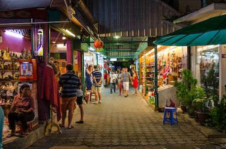
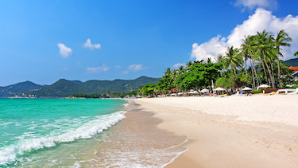

Koh Samui - Zenya Bian P7
Enjoy your vacation, Mr. Guthrie!
Koh Samui (Samui Island) is a large island on the coast of Thailand and a cosmopolitan melting pot, attracting budget travellers staying for a month or two in simple beachside bungalows, to the wealthiest holidaymakers dropping in for a weekend at one of the many luxury resort or villa on the many white sand beaches of Koh Samui.
Wat Phra Yai
 On the very top of Pratumnak Hill, between Pattaya and Jomtien Beach, you can’t fail to notice an enormous 18 metre tall Buddha popping up through the trees. This Big Buddha – the largest in the region – is the highlight of Wat Phra Yai, a temple built in the 1940s when Pattaya was nothing more than a fishing village. The Big Buddha is extremely popular with tour groups who love to see the intricate design of the statue and the temple complex, but it is also revered by local people who come to pray at the temple. Despite the crowds, the wreaths of flowers and burning incense create a reflective mood in which to explore the many smaller Buddha statues, partial views of Jomtien Beach, and the pavilion hall which has a beautifully painted mosaic on the walls.
On the very top of Pratumnak Hill, between Pattaya and Jomtien Beach, you can’t fail to notice an enormous 18 metre tall Buddha popping up through the trees. This Big Buddha – the largest in the region – is the highlight of Wat Phra Yai, a temple built in the 1940s when Pattaya was nothing more than a fishing village. The Big Buddha is extremely popular with tour groups who love to see the intricate design of the statue and the temple complex, but it is also revered by local people who come to pray at the temple. Despite the crowds, the wreaths of flowers and burning incense create a reflective mood in which to explore the many smaller Buddha statues, partial views of Jomtien Beach, and the pavilion hall which has a beautifully painted mosaic on the walls.
Fisherman's Village Bophut

Fisherman’s Village Walking Street brings the quiet, sleepy town of Bophut to life every Friday from 17:00 to 23:00. It sees the narrow Beach Road and adjoining streets crammed with market stalls and shoppers from across Koh Samui, with a diverse range of wares available at very low prices. Many of the stalls sell much the same items as you will find in markets throughout Thailand, including 100-baht T-shirts, simple jewellery, handbags, sunglasses, beer cosies, souvenirs, watches of questionable mechanical soundness, branded clothes of dubious manufacture and electrical goods of suspicious provenance. As with all market shopping in Thailand, a certain amount of judgement and measured expectations is necessary when selecting your purchases.
Chaweng Beach

Koh Samui's busiest and biggest town has sprung up around one of the island's best beaches.
The famous Green Mango strip still forms the axis around which the rest of the town's bars revolve and is packed with (mostly) young revellers every night, alternating between the pubs, dance bars and girly bars. Chaweng's main strip is nearly three kilometres long though, and lots of smaller centres of activity have sprung up along it. McDonald's forms a landmark in the south of town just across the road from Chaweng's single most popular bar, Tropical Murphy's Irish pub.
Na Muang Waterfalls
Na Muang Waterfalls, a majestic set of two cascades on Koh Samui, show that the island’s beauty is not limited to its beaches. Found inland about 12 kilometres south-east of Nathon Bay, the Na Muang falls are reached by taking a walking path from the entrance to the park. The first waterfall, Na Muang 1, flows down into a pretty natural pool that provides a cool escape from the heat. About 30 minutes by foot further uphill is the smaller yet equally inviting Na Muang 2.
From the hustle and bustle of Chaweng Beach to the lively yet relaxed atmosphere of Na Muang Waterfalls to the timeless feel of Bophut's Fisherman's Village to the tropical beach paradise of Wat Prah Yai, Koh Samui is unique among Thailand's islands in maintaining a broad appeal for everyone. This helps to give the distinctive relaxed atmosphere that sets it apart. Book your trip to Koh Samui today!